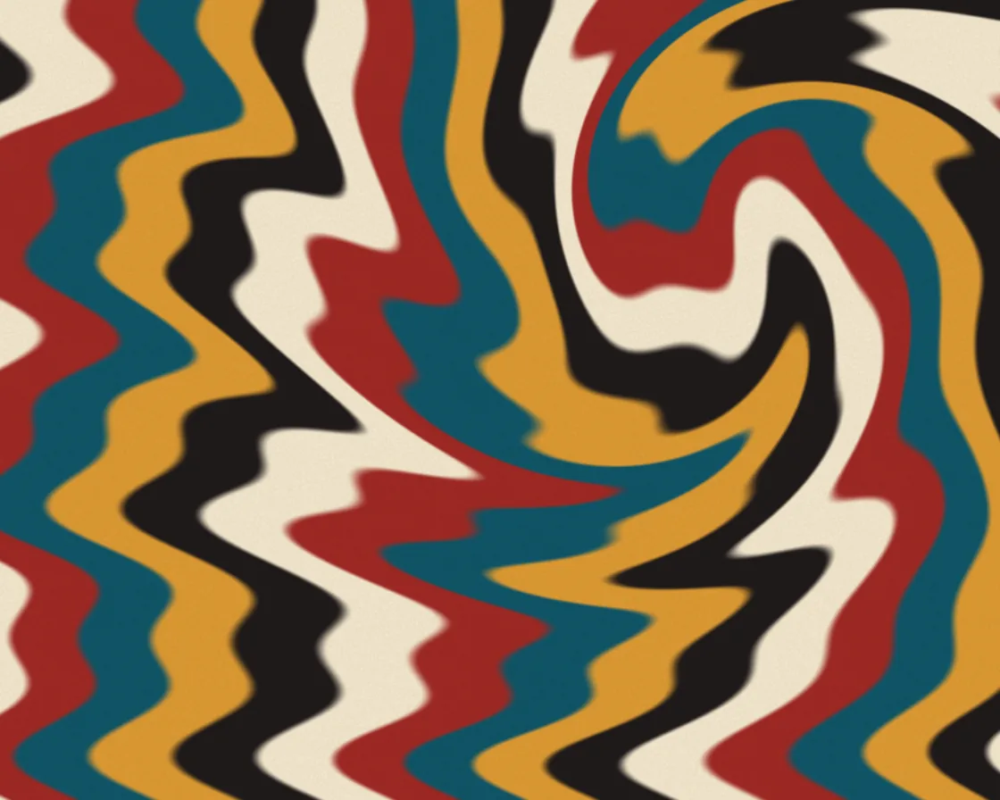

Paper marbling
Paper marbling is a WebGL effect: backward lookup through comb and swirl warps; paint never smears. One plain JavaScript file with no dependencies; add it with npx motion-library add marbling.

Open it live, tune it and copy the code
What is Paper marbling?
Bands of paint are combed and swirled like marbled paper; the pointer drags the stylus.
How does Paper marbling work?
Each pixel traces backward through the comb waves and stylus swirl to find its paint band, so the backward lookup never smears.
How do I add Paper marbling to my website?
- In your project folder, run
npx motion-library add marbling. It writesanimations/marbling.js. Needs Node 18 or newer. - Import it and call it with a container element that has a size:
import fx from './animations/marbling.js'; const stop = fx(document.querySelector('#hero')); - Call
stop()to clean up, for example when a component unmounts.
Every setting below is also a flag, so you can install it already tuned: npx motion-library add marbling --comb 2.
What settings can I tweak?
| Setting | Flag | Default | Range | Step |
|---|---|---|---|---|
| Comb | --comb | 1 | 0 to 2 | 0.05 |
| Swirl | --swirl | 1 | 0 to 2 | 0.05 |
Specifications
- Renderer
- WebGL
- Category
- Fluid
- Dependencies
- None
- File size
- 3.8 KB, unminified
- Interactive
- Yes: it responds to the pointer
- Reduced motion
- Plays the same for everyone
- Licence
- MIT-0: use it anywhere, no credit needed
Source code
// Paper marbling: bands of floating paint, combed and swirled. Each pixel traces backward through a comb pass
// (sideways waves), a swirl around the stylus and a slow drift, then reads its colour from the original stripes.
const PARAMS = { comb: 1, swirl: 1 };
export default function (stage) {
const canvas = document.createElement('canvas');
canvas.style.cssText = 'position:absolute;inset:0;width:100%;height:100%;display:block';
stage.append(canvas);
const gl = canvas.getContext('webgl2', { antialias: false });
if (!gl) { stage.textContent = 'This needs WebGL2.'; return () => canvas.remove(); }
const vs = `#version 300 es
in vec2 p; out vec2 uv; void main() { uv = p * .5 + .5; gl_Position = vec4(p, 0, 1); }`;
const fs = `#version 300 es
precision highp float; in vec2 uv; out vec4 o; uniform vec2 R, M; uniform float T, C, S;
vec3 paint(float v) {
vec3 cols[5] = vec3[5](vec3(.95, .9, .8), vec3(.62, .16, .14), vec3(.06, .33, .4), vec3(.86, .6, .2), vec3(.12, .1, .1));
float f = fract(v) * 5.; int i = int(f); float k = smoothstep(.82, 1., fract(f));
return mix(cols[i], cols[(i + 1) % 5], k);
}
void main() {
vec2 a = vec2(R.x / R.y, 1.), q = uv * a;
// undo the stylus swirl: rotate around the pointer, more strongly close to it
vec2 d = q - M * a; float r = length(d), ang = S * 2.6 * exp(-r * r * 9.) * sin(T * .5);
q = M * a + mat2(cos(ang), -sin(ang), sin(ang), cos(ang)) * d;
// undo the comb: alternating sideways waves
q.x += C * .06 * sin(q.y * 18. + T * .4) + C * .03 * sin(q.y * 41. - T * .3);
q.y += C * .05 * sin(q.x * 9. + T * .25);
// the original floated bands, with a little drift
float v = q.x * 2.2 + .25 * sin(q.y * 3. + T * .1) + T * .015;
vec3 c = paint(v);
float grain = fract(sin(dot(uv * R, vec2(12.9, 78.2))) * 43758.5);
o = vec4(c * (.96 + .04 * grain), 1);
}`;
const sh = (t, s) => { const x = gl.createShader(t); gl.shaderSource(x, s); gl.compileShader(x); if (!gl.getShaderParameter(x, gl.COMPILE_STATUS)) throw new Error(gl.getShaderInfoLog(x)); return x; };
const prog = gl.createProgram(); gl.attachShader(prog, sh(gl.VERTEX_SHADER, vs)); gl.attachShader(prog, sh(gl.FRAGMENT_SHADER, fs)); gl.bindAttribLocation(prog, 0, 'p'); gl.linkProgram(prog); gl.useProgram(prog);
gl.bindBuffer(gl.ARRAY_BUFFER, gl.createBuffer()); gl.bufferData(gl.ARRAY_BUFFER, new Float32Array([-1, -1, 3, -1, -1, 3]), gl.STATIC_DRAW);
gl.enableVertexAttribArray(0); gl.vertexAttribPointer(0, 2, gl.FLOAT, false, 0, 0);
const u = n => gl.getUniformLocation(prog, n), uR = u('R'), uM = u('M'), uT = u('T'), uC = u('C'), uS = u('S');
const resize = () => { const d = Math.min(devicePixelRatio, 1.5); canvas.width = stage.clientWidth * d | 0; canvas.height = stage.clientHeight * d | 0; gl.viewport(0, 0, canvas.width, canvas.height); };
const ro = new ResizeObserver(resize); ro.observe(stage); resize();
let mx = 0.5, my = 0.5, tx = mx, ty = my, lastMove = -1e9, raf;
const onMove = e => { const b = canvas.getBoundingClientRect(); tx = (e.clientX - b.left) / b.width; ty = 1 - (e.clientY - b.top) / b.height; lastMove = performance.now(); };
canvas.addEventListener('pointermove', onMove);
function frame(now) {
const t = now / 1000;
if (now - lastMove > 1500) { tx = 0.5 + Math.cos(t * 0.35) * 0.25; ty = 0.5 + Math.sin(t * 0.5) * 0.25; }
mx += (tx - mx) * 0.05; my += (ty - my) * 0.05;
gl.uniform2f(uR, canvas.width, canvas.height); gl.uniform2f(uM, mx, my); gl.uniform1f(uT, t); gl.uniform1f(uC, PARAMS.comb); gl.uniform1f(uS, PARAMS.swirl);
gl.drawArrays(gl.TRIANGLES, 0, 3); raf = requestAnimationFrame(frame);
}
raf = requestAnimationFrame(frame);
return () => { cancelAnimationFrame(raf); ro.disconnect(); canvas.removeEventListener('pointermove', onMove); gl.getExtension('WEBGL_lose_context')?.loseContext(); canvas.remove(); };
}